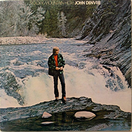

A/V Accessibility
Make your media accessible to everyone
00:00



Rocky Mountain
John denvar
transcript
[Music]
He was born in the summer of his twenty-seventh year Coming home to a place he'd never been before He left yesterday behind him You might say he was born again You might say he found a key for ev'ry door
When he first came to the mountains his life was far away On the road and hangin' by a song But the string's already broken, and he doesn't really care It keeps changin' fast, and it don't last for long
But the Colorado Rocky Mountain high I've seen it rainin' fire in the sky The shadow from the starlight Is softer than a lullaby Rocky Mountain high Rocky Mountain high
He climbed cathedral mountains He saw silver clouds below He saw everything as far as you can see And they say that he got crazy once And he tried to touch the sun And he lost a friend but kept his memory
Now he walks in quiet solitude The forests and the streams Seeking grace in every step he takes His sight has turned inside Himself to try and understand The serenity of a clear blue mountain lake
And the Colorado Rocky Mountain high I've seen it rainin' fire in the sky You can talk to God and listen to the casual reply Rocky Mountain high Rocky Mountain high
Now his life is full of wonder But his heart still knows some fear Of a simple thing, he cannot comprehend Why they try to tear the mountains down To bring in a couple more More people, more scars upon the land
And the Colorado Rocky Mountain high I've seen it rainin' fire in the sky I know he'd be a poor man If he never saw an eagle fly Rocky Mountain high Colorado Rocky Mountain high I've seen it rainin' fire in the sky Friends around the campfire Everybody's high
Rocky Mountain high.....(4)
[Music]
He was born in the summer of his twenty-seventh year Coming home to a place he'd never been before He left yesterday behind him You might say he was born again You might say he found a key for ev'ry door
When he first came to the mountains his life was far away On the road and hangin' by a song But the string's already broken, and he doesn't really care It keeps changin' fast, and it don't last for long
But the Colorado Rocky Mountain high I've seen it rainin' fire in the sky The shadow from the starlight Is softer than a lullaby Rocky Mountain high Rocky Mountain high
He climbed cathedral mountains He saw silver clouds below He saw everything as far as you can see And they say that he got crazy once And he tried to touch the sun And he lost a friend but kept his memory
Now he walks in quiet solitude The forests and the streams Seeking grace in every step he takes His sight has turned inside Himself to try and understand The serenity of a clear blue mountain lake
And the Colorado Rocky Mountain high I've seen it rainin' fire in the sky You can talk to God and listen to the casual reply Rocky Mountain high Rocky Mountain high
Now his life is full of wonder But his heart still knows some fear Of a simple thing, he cannot comprehend Why they try to tear the mountains down To bring in a couple more More people, more scars upon the land
And the Colorado Rocky Mountain high I've seen it rainin' fire in the sky I know he'd be a poor man If he never saw an eagle fly Rocky Mountain high Colorado Rocky Mountain high I've seen it rainin' fire in the sky Friends around the campfire Everybody's high
Rocky Mountain high.....(4)
[Music]